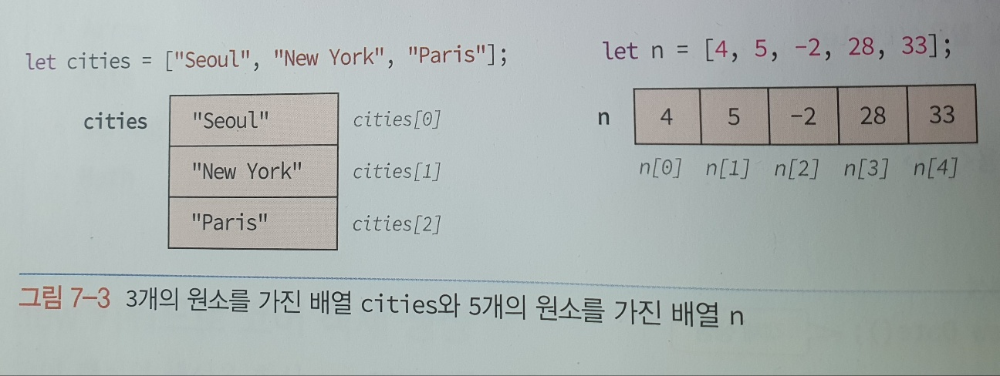
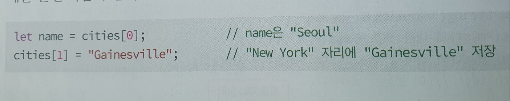
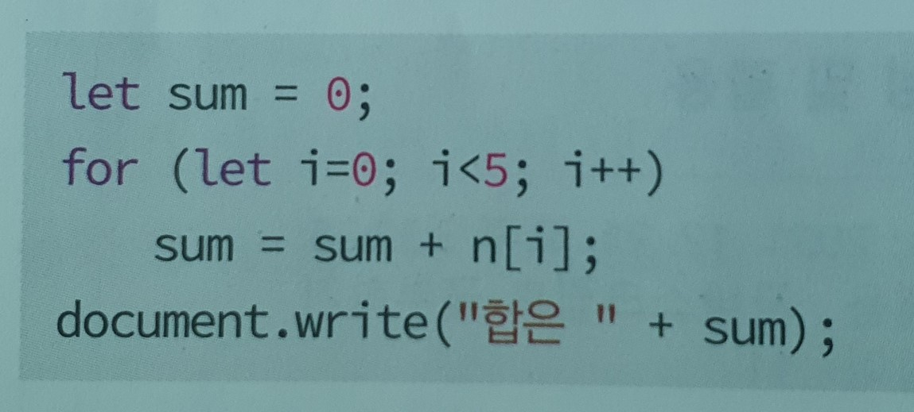

배열과 Array
배열은 여러 개의 원소들을 연속적으로 저장하고 전체를 하나의 단위로 다루는 데이터 구조이다.

배열의 각 원소는 [ ] 기호와 0에서 시작하는 인덱스를 이용하여 접근한다.
cities 배열의 경우 원소의 개수가 3이므로, 사용 가능한 인덱스는 0~2 까지이다.
cities 배열의 원소를 접근하는 예를 들면 다음과 같다.

배열을 이용하면 반복문으로 데이터 처리를 쉽게 할 수 있다.
다음은 for문을 이용하여 그림7-3에 작성된 배열 n[ ]의 원소들의 합을 구하는 코드이다.
